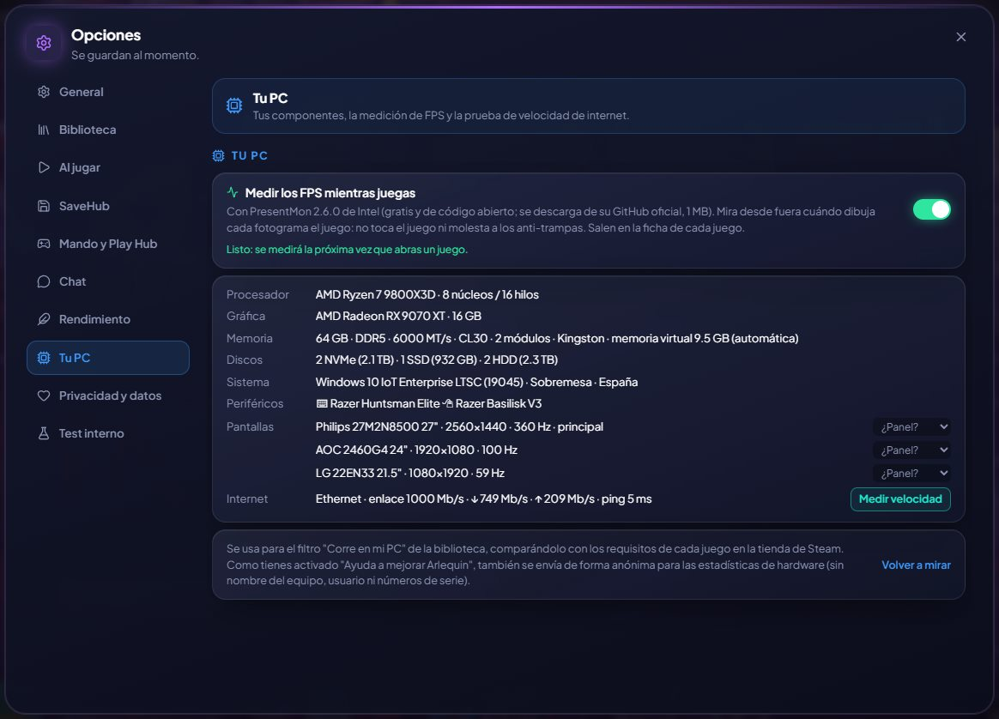

Il tuo PC a colpo d’occhio
I tuoi componenti, la tua connessione e cosa ti manca da attivare per rendere al massimo.
GameHub mostra il tuo processore, la tua scheda video, la tua memoria (velocità, latenza e moduli), i tuoi dischi, i tuoi schermi con la loro frequenza di aggiornamento, tastiera e mouse, e la velocità di internet con un test di circa 25 secondi.
E ti avvisa di ciò che spesso resta spento: se la tua memoria va più piano di quanto dice la confezione perché il profilo XMP (EXPO sulle DDR5 AMD) è disattivato nel BIOS, o se il tuo PC supporta il Resizable BAR (Smart Access Memory su AMD) ed è disattivato. Entrambi regalano FPS in molti giochi, e ti dice come si chiamano nel BIOS di ogni marca.
Mostra anche la tua scheda madre con versione e data del BIOS e chi ha prodotto la tua scheda video (Sapphire, ASUS, MSI…), e ti avvisa se Windows corregge errori hardware (WHEA) o se il driver video si blocca mentre giochi o durante un test: di solito segno di un overclock instabile.
Come si usa
- Opzioni → Il tuo PC.
- «Testa la velocità» per il test di internet (quello automatico, una volta al mese, non parte con i dati mobili).

Lo provi?
⬇ Download diretto 🛍️ Scarica dal Microsoft StoreWindows 10 e 11 (64 bit) · Gratis · Si aggiorna da solo